홈 › 싱크대·수납장
싱크대 교체·수납장 리폼
비용과 현장 15곳
싱크대 전체를 새로 짜는 일부터, 물에 젖어 부푼 하부장 밑판 한 장만 바꾸는 일까지 맡아요. 이사·사무실 이전 때 쓰던 싱크대를 떼어 새 자리에 다시 세우는 작업도 많아요. 통째로 바꿀지, 상한 부분만 손볼지부터 사진으로 같이 정해요.

어떤 싱크대 일을 맡기시나요
| 상황 | 주로 하는 작업 |
|---|---|
| 하부장 바닥이 썩고 곰팡이가 폈어요 | 밑판·측판 부분 교체, 곰팡이 자리 정리 |
| 오븐·식기세척기를 빼서 자리가 비었어요 | 빈 자리에 맞춘 하부장 제작 |
| 이사·사무실 이전으로 싱크대를 옮겨요 | 철거 → 운반 → 새 공간에 재설치 |
| 상부장이 앞으로 기울어요 | 벽면 고정 보강, 처짐 잡기 |
| 수납이 모자라요 | 키큰장·펜트리장·아일랜드 리폼 |
싱크대 비용을 가르는 것
가장 크게 갈리는 건 새로 짜는지, 있는 장을 고치는지예요. 그다음은 상판을 그대로 쓰는지, 급배수·전기 위치가 바뀌는지, 철거한 장을 어떻게 처리하는지예요. 사무실 이전처럼 옮겨 다시 세우는 경우는 새 공간의 벽 길이와 배관 위치가 맞는지가 관건이에요.
지역별 싱크대·수납장 현장
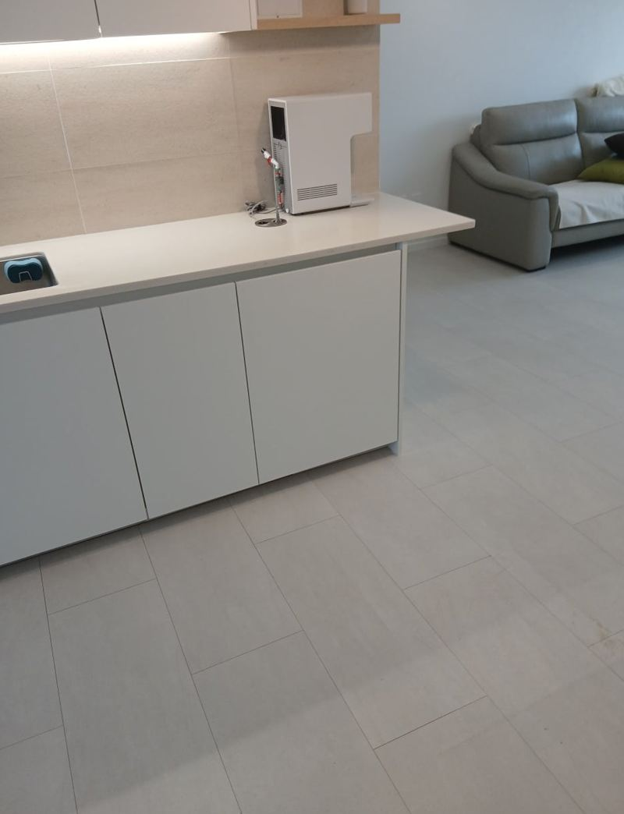
부천 아일랜드 식탁 리폼으로 공간 넓히는 방법부천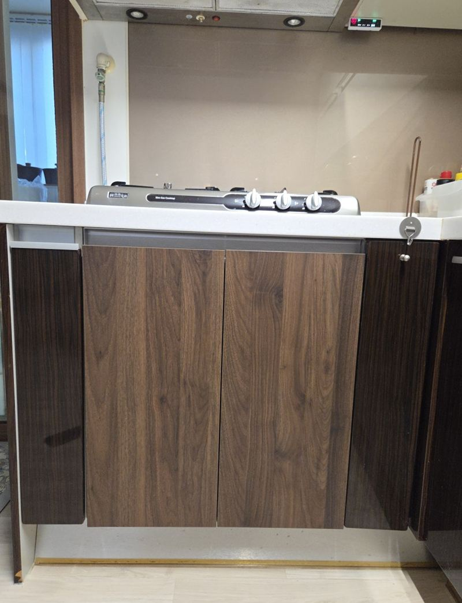
화성 빌트인 오븐 철거 후 하부장 제작 비용화성 성동 사무실 이전 시 기존 싱크대 재설치 순서서울 성동
성동 사무실 이전 시 기존 싱크대 재설치 순서서울 성동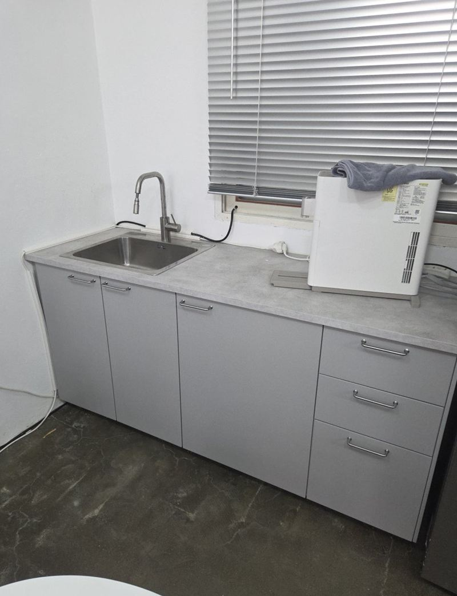
부천 싱크대 이사 이전 재설치 비용과 방법부천 · 블로그 현장기 ↗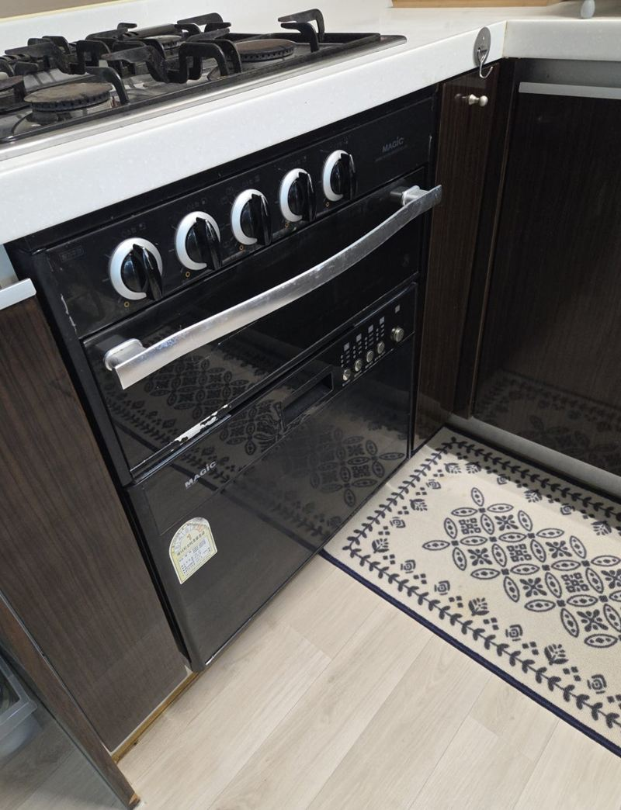
천안 싱크대 오븐 철거 후 하부장 설치 방법천안 · 블로그 현장기 ↗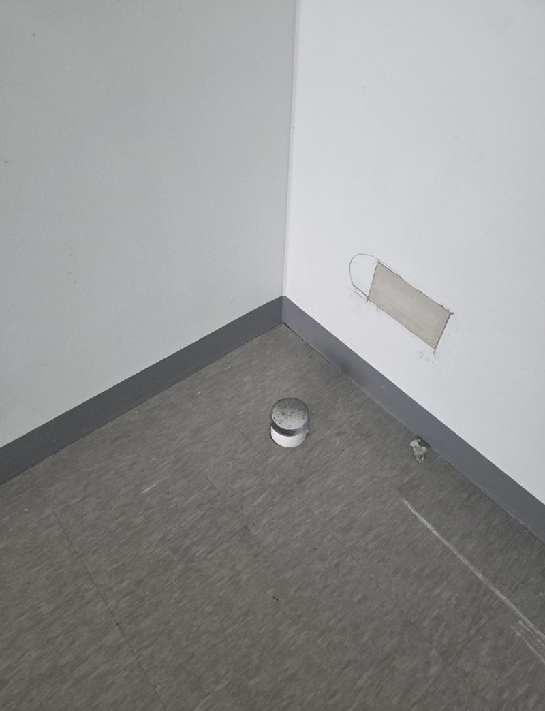
동탄 지식산업센터 싱크대 설치, 업체 고르는 기준동탄 · 블로그 현장기 ↗ 동탄 주방 싱크대 상하부장 철거·제작 비용동탄 · 블로그 현장기 ↗
동탄 주방 싱크대 상하부장 철거·제작 비용동탄 · 블로그 현장기 ↗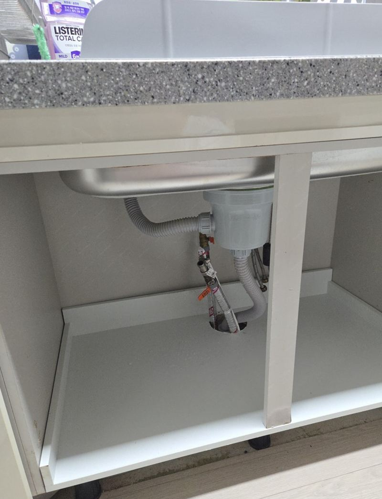
고양 싱크대 하부장 밑판 썩음, 교체 방법고양 · 블로그 현장기 ↗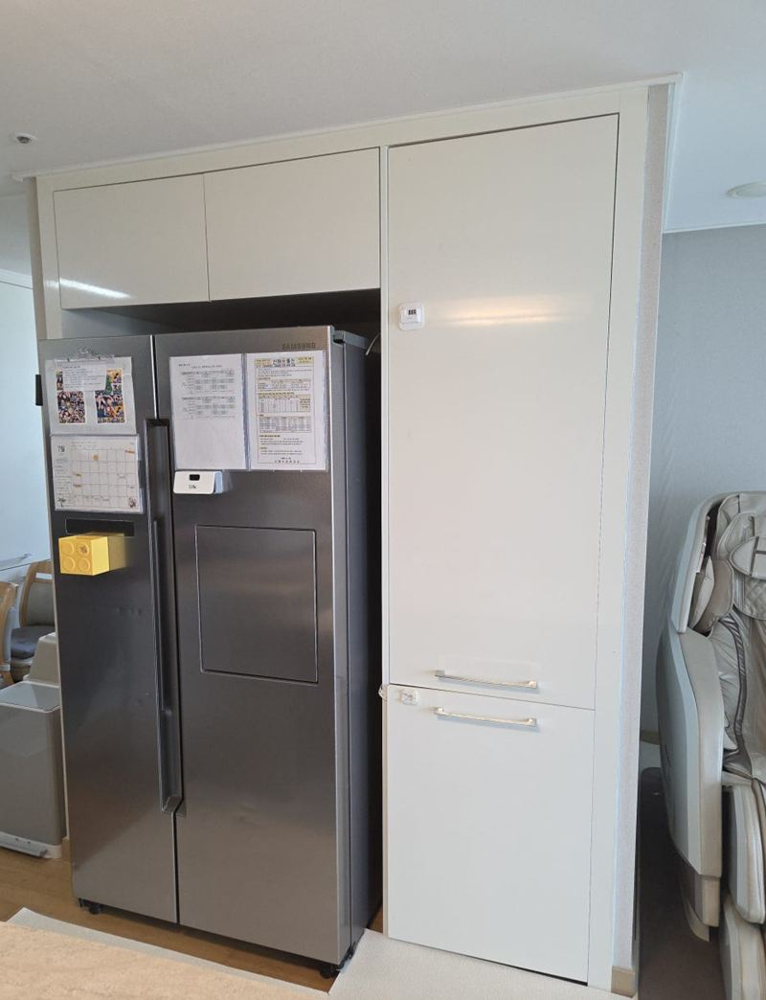
고양 키큰장 리폼으로 상부장 만드는 방법고양 · 블로그 현장기 ↗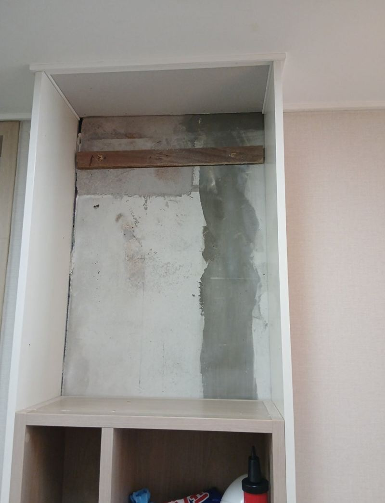
경기광주 부엌 수납장 교체 비용과 순서경기광주 · 블로그 현장기 ↗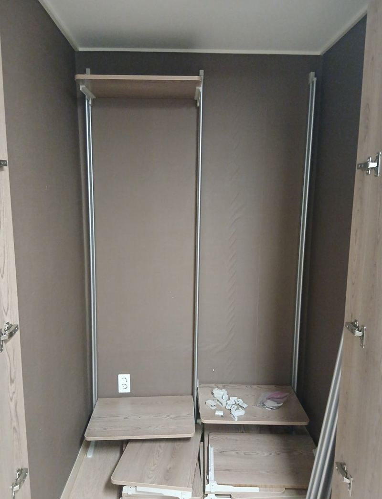
하남 펜트리장 제작·이전 설치 방법하남 · 블로그 현장기 ↗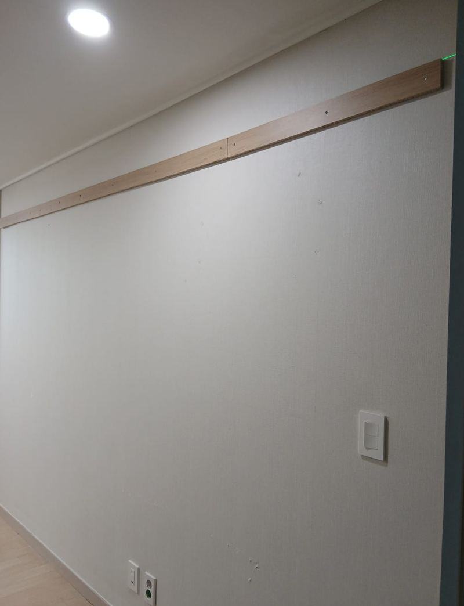
화성 상부장 처짐 없이 벽면 고정하는 방법화성 · 블로그 현장기 ↗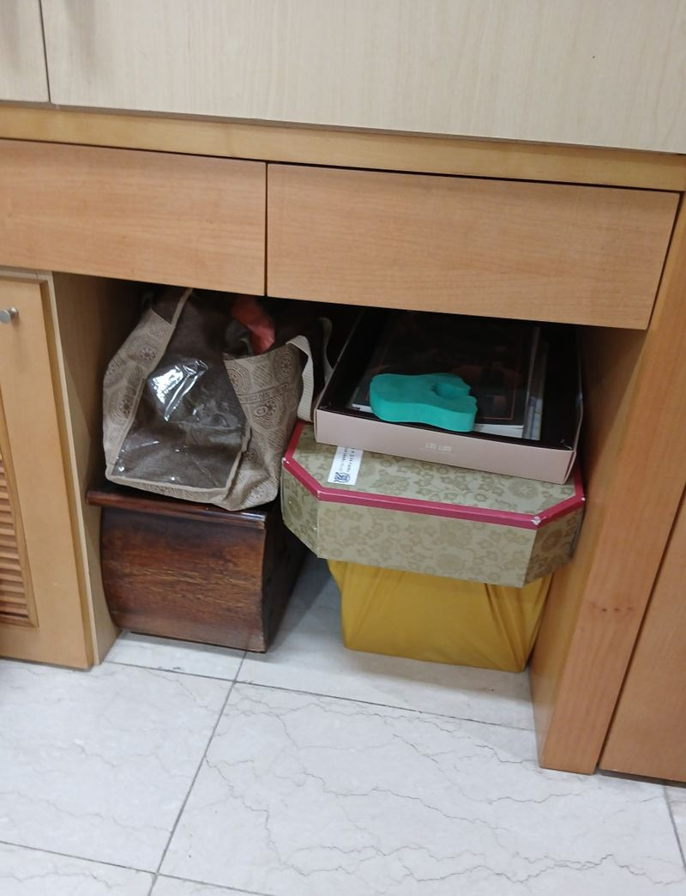
종로 오픈 수납장 문짝 새로 다는 방법서울 종로 · 블로그 현장기 ↗ 종로 싱크대 하부장 곰팡이 보수 방법서울 종로 · 블로그 현장기 ↗
종로 싱크대 하부장 곰팡이 보수 방법서울 종로 · 블로그 현장기 ↗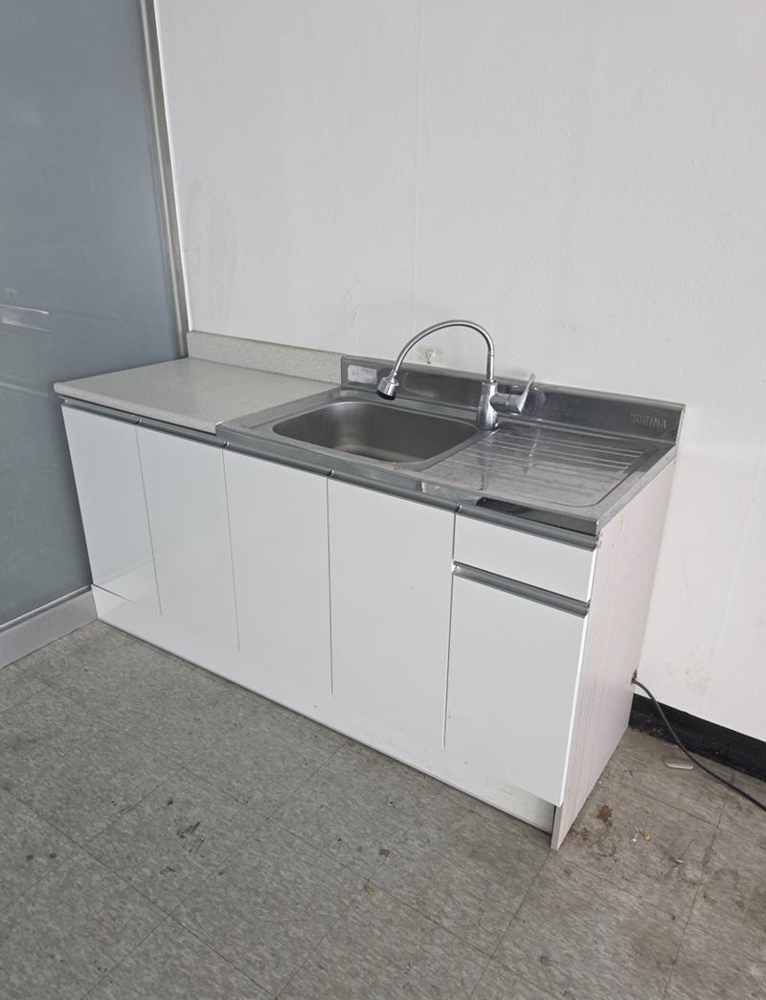
파주 사무실 이전 싱크대 철거 비용과 순서파주 · 블로그 현장기 ↗
싱크대 교체, 이것도 궁금하시죠
상판은 두고 하부장만 바꿀 수 있나요?
상판이 멀쩡하면 살리고 아래 장만 교체하는 경우가 많아요. 상판을 잠깐 들어 올려야 하는지는 구조를 보고 판단해요.
사무실 탕비실 싱크대도 하나요?
네, 지식산업센터·사무실 이전에 맞춘 철거와 재설치 현장이 여럿 있어요.
싱크대 정면 사진과 문제 있는 칸을 열어 찍은 사진을 준비해 주세요.
전화 상담 010-4517-9872